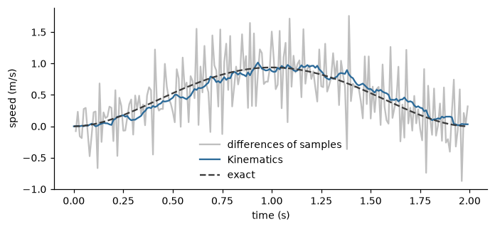

Kinematics and energy#
How fast a body moves, how much its speed changes, how its path bends and how much motion it carries are the most basic descriptions of movement, and they are the starting point for most of the others. They are low-level quantities in the conceptual model (Conceptual framework): each is defined for one moment or for a short stretch of movement, and each is computed from a position signal alone. In studies of expressive movement the speed, the acceleration and the energy of the body are among the cues that best separate emotions and movement styles [12, 13], and the smoothness of a movement (Smoothness), its segmentation into gestures (Gesture segmentation) and its impulsivity (Impulsivity and suddenness) are all computed from the quantities of this page.
The page covers the six features of the family: Kinematics,
KineticEnergy, DirectionChange,
Directness, TrajectoryNonPlanarity and
MotionNoiseDetector. The symbols are those of Notation, units and conventions.
Definitions#
A point of the body (a joint, a marker, the centre of mass) has a position \(\mathbf{p}(t) \in \mathbb{R}^d\), with \(d\) equal to 1, 2 or 3. Its kinematic quantities are the successive derivatives with respect to time in seconds,
the velocity, the acceleration and the jerk, with units of length/s, length/s\(^2\) and length/s\(^3\). The speed is the magnitude of the velocity, \(v = \lVert \mathbf{v} \rVert\), and the direction of the movement is the unit vector \(\mathbf{v} / v\). Two quantities describe the path of the point independently of how fast it is traversed. The path length between two instants is \(\int \lVert \mathbf{v} \rVert \, dt\), and the curvature \(\kappa\) is the inverse of the radius of the circle that best follows the path: \(\kappa = 1/r\) for a circle of radius \(r\) and \(\kappa = 0\) for a straight line. In terms of the velocity and the acceleration, the curvature is
where the cross product is the one of three-dimensional space (in two dimensions the third component of both vectors is zero). A point at rest has no direction and no curvature.
For a set of \(K\) joints with weights \(w_k\) the kinetic energy is
With \(w_k\) equal to the mass of the segment that joint \(k\) stands for, this is the translational kinetic energy of the body, in joules for masses in kilograms and speeds in metres per second. The weights of the library are usually an approximation of the mass, or 1 where none is known, so the energy is best read as a measure of how much motion the body carries, with fast and heavy segments counting more, and compared between recordings that use the same weights.
Derivatives of a sampled position#
A recording gives the position at the instants \(t = n \, \Delta t\) only, and its derivatives must be estimated. Differences of consecutive samples are the simplest estimate, and amplify measurement noise at every order: the noise of the speed is of the order of the noise of the position divided by \(\Delta t\), and that of the jerk is larger by a further factor \(1/\Delta t^{2}\). The usual remedy is to fit a polynomial to a few samples and to differentiate the fit, the Savitzky-Golay filter [citation needed] (Savitzky and Golay, smoothing and differentiation of data by least squares).
Kinematics does so. The newest filter_window_length samples (15 by default) are fitted by a
polynomial of order filter_polyorder (3 by default), and the estimate is the fit, or one of its derivatives, evaluated at
the centre of the window. The estimate therefore describes the movement \((w - 1)/2\) samples ago, where \(w\) is the window
length: 70 ms at 100 Hz with the defaults. A longer window removes more noise and lags more. The time step is taken from the
timestamps if they are given and from the sampling rate otherwise (Time, units and parameters).
The figure compares the speed of a reach (a displacement of 1 m in 2 s, with a position noise of 3 mm) estimated from
differences of consecutive samples and by the Savitzky-Golay fit of Kinematics, against the exact speed.
import matplotlib.pyplot as plt
import numpy as np
from pyeyesweb.low_level import Kinematics
rate = 100.0
time = np.arange(200) / rate
s = time / 2.0
position = 10 * s**3 - 15 * s**4 + 6 * s**5 # a reach of 1 m in 2 s with a bell-shaped speed
exact = (30 * s**2 - 60 * s**3 + 30 * s**4) / 2.0
noisy = position + np.random.default_rng(0).normal(scale=0.003, size=position.size)
differences = np.diff(noisy) * rate
fitted = Kinematics(sampling_rate=rate, dims=1).run(noisy[:, None]).velocity
fig, ax = plt.subplots(figsize=(6.4, 3.0))
ax.plot(time[1:], differences, color="0.75", label="differences of samples")
ax.plot(time, fitted, color="#2b6a99", label="Kinematics")
ax.plot(time, exact, color="#3a3a3a", linestyle="--", label="exact")
ax.set_xlabel("time (s)")
ax.set_ylabel("speed (m/s)")
ax.legend(frameon=False)
fig.tight_layout()

The quantities#
Velocity, acceleration, jerk, curvature and direction#
Kinematics computes any of smoothed (the filtered position), velocity, acceleration, jerk, curvature and
direction of a point, one or several in the same pass. Each is a scalar (the magnitude) or a vector with one component per
coordinate, as output_dims says; the direction is always a vector. The curvature is reported as 0 while the speed is
below movement_threshold, because the direction of a point that does not move is not defined and the ratio above is
dominated by noise. Its status is OK from the first sample on, the first estimates being those of a partly filled window,
and INVALID_INPUT for data that are not finite. Corrected in the core: acceleration and jerk are the true second and
third derivatives, and the curvature of the path has the right normalisation.
The example is a point on a circle of radius 0.2 m, run at 1 Hz and sampled at 100 Hz. The speed is \(2\pi r f = 1.257\) m/s, the acceleration is the centripetal one, \((2\pi f)^2 r = 7.90\) m/s\(^2\), the jerk is \((2\pi f)^3 r = 49.6\) m/s\(^3\) and the curvature is \(1/r = 5\) m\(^{-1}\). The estimates at the end of the recording are close to these, within the error of the polynomial fit:
>>> from pyeyesweb.low_level import Kinematics
>>> time = np.arange(200) / 100.0
>>> circle = np.c_[0.2 * np.cos(2 * np.pi * time), 0.2 * np.sin(2 * np.pi * time)]
>>> feature = Kinematics(sampling_rate=100.0, dims=2, output_type=["velocity", "acceleration", "jerk", "curvature"])
>>> last = feature.run(circle)[-1]
>>> [round(float(value), 1) for value in (last.velocity, last.acceleration, last.jerk, last.curvature)]
[1.3, 7.8, 49.0, 4.9]
>>> feature.outputs
Schema(Output('velocity', unit='m/s'), Output('acceleration', unit='m/s^2'), Output('jerk', unit='m/s^3'), Output('curvature', unit='1/m'))
The output of Kinematics is the input of several other features. The speed feeds the four window metrics of
Smoothness, and the velocity and acceleration vectors feed CurvatureDispersion.
Kinetic energy#
KineticEnergy evaluates \(E\) for the joints of a skeleton frame, one frame at a time. In its
default "position" mode the speed of each joint is the displacement between two frames divided by the time step, so the first
frame gives 0. In "velocity" mode the frames already hold velocities. Only the joints that have a weight contribute, and the
weights come from the skeleton preset, or from the weights parameter. If reference_point names a joint, the positions
are taken relative to it, so that the translation of the whole body does not count: the energy then describes how the body
moves, not where it goes. A frame with a missing joint or a value that is not finite gives INVALID_INPUT and is not taken as
the previous one.
Energy grows with the square of the speed, so doubling the speed multiplies it by four. The hand of the example below moves on a circle of radius 0.2 m at 1 Hz and then at 2 Hz, while the elbow stays still:
>>> from pyeyesweb.low_level import KineticEnergy
>>> def energy(frequency):
... frames = np.zeros((200, 2, 3))
... frames[:, 0, 0] = 0.2 * np.cos(2 * np.pi * frequency * time)
... frames[:, 0, 1] = 0.2 * np.sin(2 * np.pi * frequency * time)
... feature = KineticEnergy(labels=["hand", "elbow"], weights={"hand": 1.0, "elbow": 2.0}, sampling_rate=100.0)
... return feature.run(frames).kinetic_energy
>>> slow, fast = energy(1.0), energy(2.0)
>>> slow[:3].round(3), fast[:3].round(3)
(array([0. , 0.789, 0.789]), array([0. , 3.154, 3.154]))
>>> round(float(fast[1] / slow[1]), 2)
4.0
A hand of weight 1 at 1.257 m/s has an energy of \(\tfrac12 \cdot 1 \cdot 1.257^2 = 0.79\), as the first value shows, and the weight of the still elbow does not matter. The unit is the weight unit times the squared speed. The energy is the usual intensity signal for the segmentation of gestures (Gesture segmentation).
Direction change#
A path that turns sharply is more abrupt than one that does not, whatever its speed.
DirectionChange looks at the path of a point over a window of window positions and
gives two measures. The cosine measure looks for a turn of about a right angle between the first and the second half of
the window. With \(\mathbf{p}_0\), \(\mathbf{p}_m\) and \(\mathbf{p}_N\) the oldest, the middle and the newest position,
\(\mathbf{l}_1 = \mathbf{p}_m - \mathbf{p}_0\) and \(\mathbf{l}_2 = \mathbf{p}_N - \mathbf{p}_m\), the angle between the two
segments is \(\theta = \arccos\big(\mathbf{l}_1 \cdot \mathbf{l}_2 / (\lVert\mathbf{l}_1\rVert \lVert\mathbf{l}_2\rVert)\big)\),
\(a = 1 - \theta/\pi\), and
It is 1 for a right-angle turn and falls to 0 at a distance \(\epsilon\) (epsilon, 0.5 by default) from it; a straight path
and a U-turn both give 0. The polygon measure subsamples the window to number_of_subsamples points and gives the
area of the polygon they form, by the shoelace sum \(\tfrac12 \lVert \sum_i \mathbf{X}_i \times \mathbf{X}_{i+1} \rVert\), in
the unit of the data squared: large for broad movements that enclose space, small for narrow or linear ones. The feature
takes one trajectory of two or three coordinates. Corrected in the core: it used to average the markers of a frame, and now
rejects a frame with several markers; the numbers for a single point are unchanged.
>>> from pyeyesweb.low_level import DirectionChange
>>> out = np.c_[np.arange(11.0), np.zeros(11)] # 10 steps along x ...
>>> up = np.c_[10.0 * np.ones(10), np.arange(1.0, 11.0)] # ... then 10 steps along y
>>> result = DirectionChange(window=21).run(np.vstack([out, up]))[-1]
>>> round(float(result.cosine), 2), round(float(result.polygon), 1)
(1.0, 49.5)
Directness#
The directness of a path is the ratio of the straight-line distance between its ends to its length,
which is 1 for a straight path and tends to 0 for a path that returns to its start. It tells whether a point went straight to
where it ended up or wandered. Directness takes a path as an array of points, with the
newest point in the first row, and keeps no state: the window is the path that is given. A path of zero length has no
directness and gives INVALID_INPUT. A half circle has \(D = 2r / (\pi r) = 2/\pi\):
>>> from pyeyesweb.low_level import Directness
>>> angle = np.linspace(0.0, np.pi, 50)
>>> arc = np.c_[np.cos(angle), np.sin(angle)][::-1] # row 0 is the newest point
>>> line = np.c_[np.linspace(0.0, 1.0, 50), np.zeros(50)][::-1]
>>> round(float(Directness().process(arc).directness_index), 3), round(2 / np.pi, 3)
(0.637, 0.637)
>>> round(float(Directness().process(line).directness_index), 3)
1.0
Trajectory non-planarity#
A movement that stays in a plane (a circle, a swing) differs from one that leaves it (a spiral, a twisting gesture).
TrajectoryNonPlanarity fits local best-fit planes over neighbourhoods of size radius to
the points of a three-dimensional trajectory and gives the mean distance of the points from them, in the unit of the data: 0
for a planar path, larger for a path that leaves the plane. It is not the geometric curvature of the path, which is
Kinematics(output_type="curvature"). With output_type="curvature_value" the output is the inverse of that distance.
The value depends on radius: the neighbourhood has to be of the size of the movement, and values compared between
recordings must use the same radius. The radius is in metres, scaled by units, and its default is a value written for
millimetres in the original block (100 m), so with data in metres a radius of the order of the movement, for example 0.1 to
1, should be passed. A spiral of radius 1 m rising 1.26 m in two turns is not planar, a circle is:
>>> from pyeyesweb.low_level import TrajectoryNonPlanarity
>>> angle = np.linspace(0.0, 2.0 * np.pi, 30)
>>> circle = np.c_[np.cos(angle), np.sin(angle), np.zeros_like(angle)]
>>> spiral = np.c_[np.cos(2 * angle), np.sin(2 * angle), 0.2 * angle]
>>> feature = TrajectoryNonPlanarity(radius=1.0)
>>> float(feature.process(circle).curvature_radius), round(float(feature.process(spiral).curvature_radius), 3)
(0.0, 0.113)
Motion noise#
A skeleton tracker that loses a joint or mixes its labels produces speeds that jump about at random, and the energy of such
a signal is not movement. MotionNoiseDetector tests for this. For each watched joint it
keeps the last 10 speeds and computes their variance; the variance is averaged over 5 frames, and the motion is flagged
as noisy when the mean exceeds noise_threshold (a threshold on that variance, written as the block does in square metres and scaled by
units). A still body, a uniform drift and the first 14 frames are never flagged. The output is_noisy is a boolean,
valid on every call. Two quirks of the original block are kept: with several joints only the alphabetically last joint name that has a full window
counts (whatever the order of labels; this is the behaviour of the underlying EyesWeb block, only one joint decides), and the flag stays false until 14 speeds have been seen. Corrected in the core: reset() clears the speed windows.
>>> from pyeyesweb.low_level import MotionNoiseDetector
>>> rng = np.random.default_rng(0)
>>> jumping = rng.normal(scale=0.3, size=(40, 1, 3)) # a joint that jumps about
>>> feature = MotionNoiseDetector(labels=["hand"], sampling_rate=50.0)
>>> bool(feature.run(np.zeros((40, 1, 3))).is_noisy[-1]), bool(feature.run(jumping).is_noisy[-1])
(False, True)
The flag is the noise input of GestureSegmenter, which refuses to open a gesture
while it is set (Gesture segmentation).
How to read the outputs#
Feature |
Output |
Unit |
Range |
|---|---|---|---|
|
|
length/s, length/s\(^2\), length/s\(^3\) |
0 or more as a magnitude |
|
1/length |
0 or more, 0 below |
|
|
none |
unit vector |
|
|
|
weight \(\times\) (length/s)\(^2\) |
0 or more |
|
|
none |
\([0, 1]\), 1 for a right-angle turn |
|
length\(^2\) |
0 or more |
|
|
|
none |
\([0, 1]\), 1 for a straight path |
|
|
length |
0 or more, 0 for a planar path |
|
|
none |
boolean |
Magnitudes depend on the size of the movement and on the unit of the data, so they are compared between recordings made in the same unit and with the same set-up. The indices of direction change and of directness are dimensionless and do not depend on the size of the movement, only on its shape.
Practical notes#
Sampling rate and time. Every quantity with time in it uses the time step of the call. Give timestamps, or a
sampling_rate; without either the quantities are per sample and thereasonof the result says so.Window length of
Kinematics. The default window of 15 samples is 150 ms at 100 Hz. At a lower rate the same number of samples spans a longer time, and the fit smooths more of the movement itself: reduce the window, keeping it odd and greater than 3 and than the polynomial order.Order of the derivative. Noise grows with the order of the derivative, so the jerk is the least reliable of the quantities and should be read from a recording of good quality or from a longer window.
Units. Lengths are in metres. Data in millimetres need
units="mm"in the features that take it; thresholds that are lengths are still given in metres.Which window for the energy.
KineticEnergyhas no window: it is a value of one frame, and any averaging over a movement is applied to its output. Over a gesture, the mean energy and its peak are the quantities usually reported.
Further reading#
The cues of energy and speed in the recognition of emotion from movement: [12], [13]. The EyesWeb implementation of these features: [2].